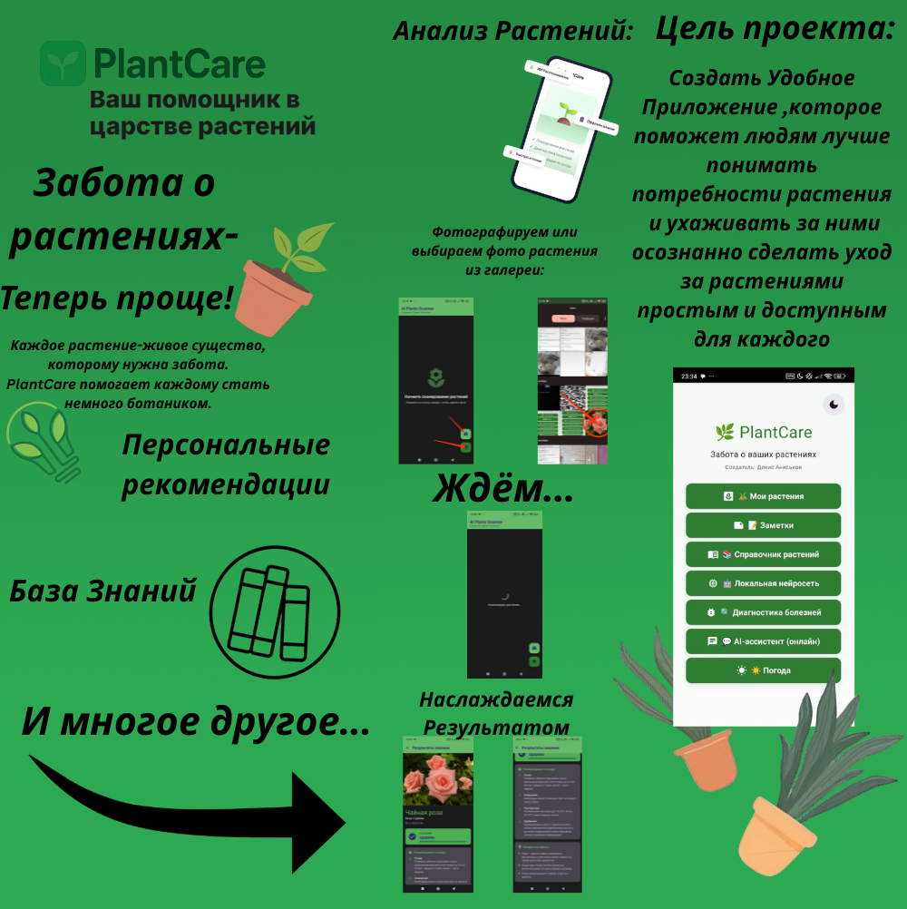
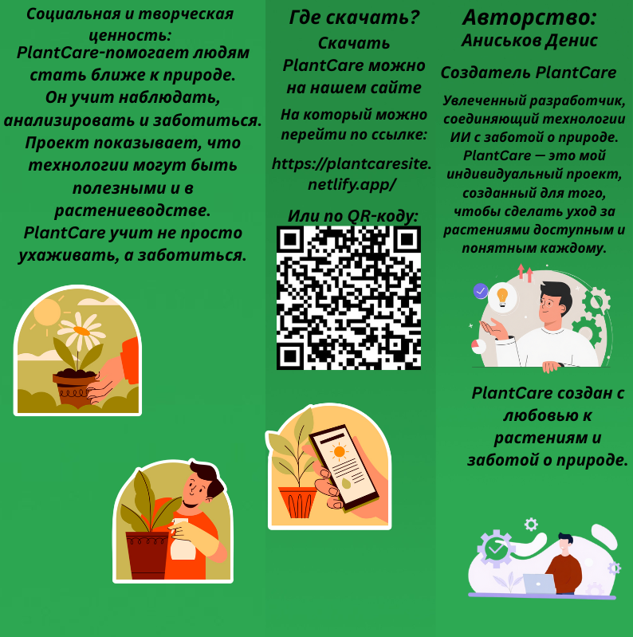

📥
Скачать
Выберите версию для вашего устройства
PlantCare доступен для Android и Windows совершенно бесплатно
Android
Смартфоны и планшеты
Версия:
1.1
Размер:
~150 МБ
Требования:
Android 7.0+
AI-ассистент (Groq/Gemini), справочник с Perenual, диагностика, погода
Windows (Установщик)
Для компьютеров на Windows
Версия:
1.1
Размер:
~200 МБ
Требования:
Windows 10+
Автоматический установщик для Windows
Windows (MSI)
Альтернативный установщик
Версия:
1.1
Размер:
~200 МБ
Требования:
Windows 10+
MSI установщик для Windows
Документация
Руководство пользователя
Формат:
PDF
Размер:
9 страниц
Язык:
Русский
Руководство по использованию приложения
🎬 Видео-презентация
Обзор возможностей PlantCare — AI-ассистент, диагностика, справочник
📄 Буклет
Краткое описание продукта в формате буклета. Нажмите на изображение для увеличения.

Страница 1

Страница 2
×

📝 Как установить
1
Скачайте файл
Выберите версию для вашей платформы и нажмите кнопку "Скачать"
2
Разрешите установку
Android: включите "Неизвестные источники" в настройках. Windows: запустите установщик
3
Установите и используйте
Следуйте инструкциям установщика и наслаждайтесь PlantCare!